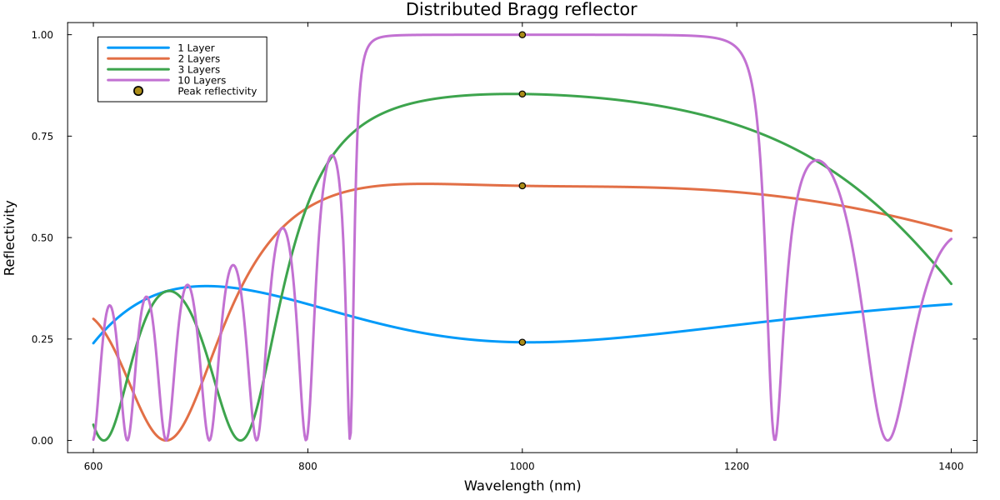

Distributed Bragg reflector
Reference: Wikipedia: Distributed Bragg reflector
using GeneralizedTransferMatrixMethod
using Plots
using Unzip
# refractiveindex.info material database
using RefractiveIndex
# Import useful predefined units
# (otherwise one could write, e.g. u"cm")
using Unitful: cm, μm, nm, °
default(
lw=3,
label=:none,
framestyle=:box,
grid=false,
size = (1200,600),
bottom_margin=5Plots.mm,
left_margin=5Plots.mm,
right_margin=5Plots.mm
)
# Refractive indices
RI_SiO₂ = RefractiveMaterial("https://refractiveindex.info/?shelf=main&book=SiO2&page=Malitson")
RI_TiO₂ = RefractiveMaterial("https://refractiveindex.info/?shelf=main&book=TiO2&page=Devore-o")
# Define layers
@permittivity "SiO₂" RI_SiO₂
@permittivity "TiO₂" RI_TiO₂
# Target wavelength
λ₀ = 1μm
# Layer thicknesses
d_SiO₂ = λ₀/4RI_SiO₂(λ₀)
d_TiO₂ = λ₀/4RI_TiO₂(λ₀)
# Calculate peak reflectivity at target wavelength
function R_peak(λ₀, N)
n₁ = RI_SiO₂(λ₀)
n₂ = RI_TiO₂(λ₀)
((n₂^(2N) - n₁^(2N)) / (n₂^(2N) + n₁^(2N)))^2
end
# Function to build structure
S(d₁, d₂, N) = LayeredStructure(
superstrate=Layer(),
layers = repeat([SiO₂(d = d₁), TiO₂(d = d₂)], N),
substrate=Layer()
)
# We are only interested in Rₚₚ, so we write a function to extract it
# (ₚ can be typed by typing \_p<tab>)
function Bragg_reflection(λ, d₁, d₂, N)
# The function returns the tuple (Rₚₚ, Rₛₛ, Rₚₛ, Rₛₚ) but we only store Rₚₚ
Rₚₚ,_,_,_ = calculate_reflection(λ, 0°, S(d₁, d₂, N))
Rₚₚ
end
# Wavelength range
λ = (600:1400)nm
# Number of layers
# Make sure to define N as a row vector, so we can use the dot-syntax to iterate
# over the wavelengths λ and N at the same time.
N = [1 2 3 10]
# Calculate reflectivity
R_Bragg = Bragg_reflection.(λ, d_SiO₂, d_TiO₂, N)
plot(λ, R_Bragg, label = string.(N) .* " Layer" .* [n ≠ 1 ? "s" : "" for n in N],
xlabel = "Wavelength",
ylabel = "Reflectivity",
title = "Distributed Bragg reflector"
)
scatter!(λ₀ * ones(length(N)), R_peak.(λ₀, N'), label="Peak reflectivity")